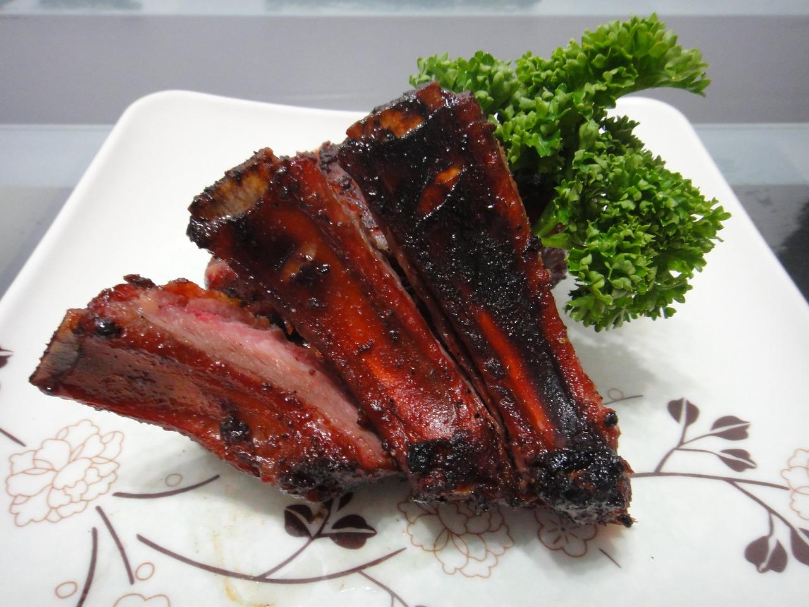

Slow Cooker BBQ Ribs

Image by: cobrawho
Description
This is a simple and easy recipe for when you are craving some tender BBQ pork ribs. If you don't have a bbq (or it's too cold to bbq outside!) then this recipe is perfect for you. All you will need is a slow cooker and an oven.
Trust me, no one will know this wasn't made on an actual bbq!
Ingredients
- Rack of ribs (preferably back ribs)
- Salt and pepper for seasoning
- BBQ sauce of your choice
Steps
- Season the rack of ribs on both sides using salt and pepper.
- Place the ribs in the slow cooker and cook on high for 3 hours.
- Transfer the ribs to a baking sheet and coat with BBQ sauce on both sides.
- Place the ribs in the oven with the broiler set on high and broil for about 5 minutes so the BBQ sauce sticks to the meat.
- Serve with your favorite side dish!
Return to Home page